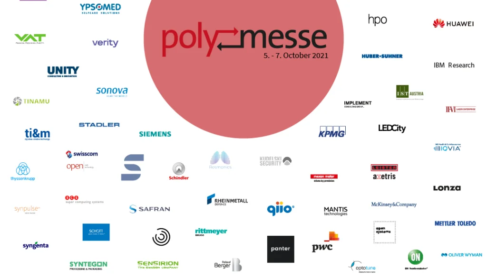

qiio is always on the look-out for great talent to become part of our fast
paced and rapidly growing IoT company with huge growth plans and many exciting projects and ventures in the
pipeline!
As an “ETH Spin-off” we’re excited to be present at the annual “Polymesse” in October and to offer the
students the following three internships:
· End-to-end plug & play secure IoT solution based on Microsoft Azure Sphere
· Hardware design of low-power secure IoT device
· Design & implementation of an AI edge-to-cloud solution based on secure IoT device
Find us on booth 48!
https://www.polymesse.ch/en/site-map.html